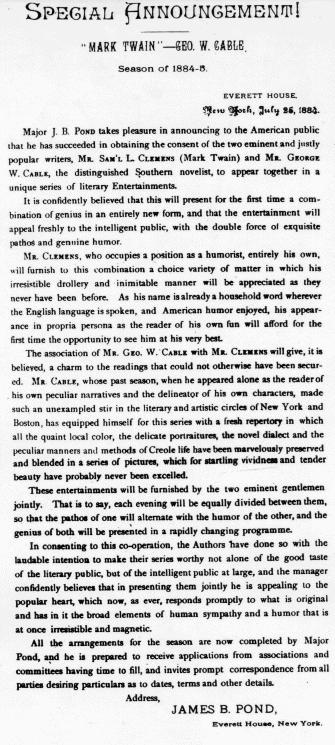

|  |
In the early summer, 1884, Major Pond prepared an announcement for the forthcoming tour which MT -- after making sure it clearly implied that his name and Cable's were alone enough to attract an audience -- approved. Cable released it to the press on July 26. There was widespread interest in the tour. On July 28, the New Orleans Picayune noted that "Twain will be the comedian and do the funny business for the show, while Cable keeps up the prayer-meeting end and scoops in the churches." That comment seems to reflect growing discontent in New Orleans with Cable's depiction of the Creoles in his fiction, and with the case he was beginning to make for better treatment of the freed slaves in his reform work, rather than Cable's reputation as a performer. In its "Lounger" column for August 9, the New York magazine The Critic and Good Literature reacted very differently to Pond's suggestion that Cable stood mainly for "pathos" -- "The circular issued by Major Pond is a marvel of adroitness, and he has shown himself very clever in not offending the amour-propre of either of his stars. . . . Mr. Cable and Mr. Clemens . . . will indeed be an attraction, but I am at a loss to see how Major Pond is going to divide Mr. Cable so as to cut the humor out of him. To do this he will certainly have to give him very different selections to read from those that delighted Chickering Hall audiences last year." |